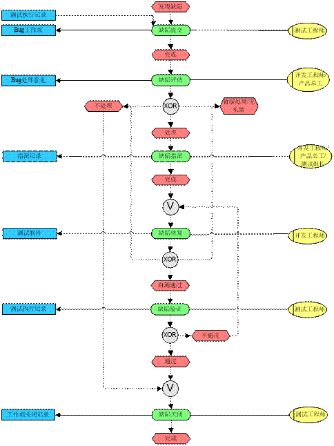

缺陷跟踪流程
版次：2021年03月22日 第2版
文件类型：程序文件
上海维宏电子科技股份有限公司 版权所有
| 修改历史 | ||||
|---|---|---|---|---|
| 文件版本 | 修改前文件版本 | 主要修订内容和原因 | 修订人 | 修订日期 |
| R1 | 新建 | 杨银 | 2017.08.21 | |
| R2 | R1 | 更新 2.2 章节的“严重级别” | 余晓霞 | 2021.03.22 |
1 引言
1.1 编写目的
为规范缺陷的提交和跟踪过程，特制定此流程。
1.2 读者对象
维宏电子科技股份有限公司所有从事产品软件测试及相关人员。
1.3 引用标准
无。
2 术语/定义
2.1 缺陷术语解析
为了统一认识，此处给出公司关于测试过程中，相关术语的定义。
| 编号 | 名称 | 定义 |
|---|---|---|
| 1 | 缺陷 | 所谓缺陷，就是产品（包含程序、数据、文档、硬件）中不符合用户需求的问题，通常又叫 Bug 。 经过一步或多步操作后，软件实际运行结果与预期结果不符合，即定义为一个 Bug 。若已知不同 Bug 现象产生的本质原因相同可归类为一个 Bug 。 |
| 2 | 缺陷跟踪 | 从缺陷提交至缺陷关闭的整个过程的跟踪，包括缺陷提交、评估、指派、修复、验证、关闭。 |
| 3 | 外部缺陷 | 客户或销售人员在使用过程中发现的 Bug ，称之为外部缺陷或外部 Bug 。 |
表格1 缺陷术语
2.2 缺陷基本属性解析
| 字段 | 解释 | 规则 |
|---|---|---|
| 标题 | Bug 现象、存在范围的简述，如哪个客户、平台、功能，Bug 主要现象等。同时可以加入提交人（即 Bug 发现人或销售联系人）。 | 格式：客户名-平台名-功能名-Bug 简述-提交人 其中平台名和 Bug 简述是必不可少项。客户名省略则为通用 bug。 例：深圳大宇--NK260-硬件端口-测试开测试关时无密码确认-江亲明 |
| 缺陷类别 | Bug 所属类型。 | 1. 需求缺陷：由需求的获取、理解或转换导致缺陷。 2. 设计缺陷：需求没问题，但设计方案不足导致缺陷。 3. 编码缺陷：需求、方案正确，但编码出错导致缺陷。 4. 界面缺陷：实现界面的绘制/编码导致的缺陷。 |
| 严重级别 | 指该 Bug 在多大程度上影响产品的正常使用 | 详细内容见：Bug 严重级别处理规范 |
| Bug 描述 | 记录 Bug 现象、Bug 重现步骤、期望结果、测试环境及分析建议，若 Bug 非每次出现，可补充说明出现的概率。 | ===格式要求============== 【测试环境】 【Bug步骤】 1. /* 描述 Bug 重现的详细步骤，尽量保证每步仅做一个操作 /； 2.…… 【实际结果】 【预期结果】 ====完毕================ |
表格2 缺陷基本属性
3 Bug 跟踪流程
结合公司的测试过程，缺陷跟踪流程分为如下阶段：
1） 缺陷提交
2） 缺陷评估
3） 缺陷指派
4） 缺陷修复
5） 缺陷验证
6） 缺陷关闭
3.1 流程图

3.2 流程详解
3.2.1 缺陷提交
在内部测试、使用、调试、销售产品过程中，对发现的问题在指定缺陷管理系统中进行记录，以上报给相关人。
- Bug 提交分为：新建 Bug 与激活已有 Bug 。
- Bug 新建： Bug 在 Bug 库中不存在，则新建 Bug 。
- Bug 激活： Bug 在 Bug 库中已经存在且为非活动状态，则重新激活该 Bug ，并确定是否需要关联相关任务项。
Bug 以 Bug 工作项形式提交。具体填写要求可参照具体的项目管理工具，如《TFS 工具使用指导书-Rn.doc》
一个 Bug 一个工作项。
在工作项测试过程中发现的问题，直接在当前工作项的“链接”页面新建 Bug 工作项（链接类型可以视情况选择，一般为“测试方”）；随机测试发现的 Bug ，在对应区域创建 Bug 工作项。
3.2.2 缺陷评估
提交至缺陷管理系统中的缺陷，需评定其后续的处理措施。
若为外部 Bug，Bug 提交后由测试组长安排人员进行 Bug 重现并记录重现结果。根据重现结果由产品总工进行评估。
Bug 提交后，若为当前任务项测试出的 Bug，由开发责任人进行评估，否则由产品总工进行评估。
经评估后，在缺陷管理系统中给出该缺陷的处理措施。
3.2.3 缺陷指派
缺陷评估后若需要进行调查、处理，则分配相应人员进入缺陷修复过程。
若为当前任务项测试出的 Bug，则直接由当前开发负责人修复，当前测试人员进行回归，否则由产品总工指派开发负责人，测试组长指派测试负责人。
3.2.4 缺陷修复
由指派的开发责任人对缺陷进行定位分析、修复处理。
Bug 修复后开发人员需进行自测，确保缺陷得以修复。
Bug 修复后开发人员需提交原因分析及处理说明。
缺陷定位分析过程中，发现 Bug 难以修复或影响范围太大，综合 Bug 修改成本、影响程度等原因评估不处理的，重新修改 Bug 处理意见为不处理，进入缺陷关闭阶段。
缺陷定位分析过程中，发现 Bug 修改比较复杂，综合 Bug 影响程度等原因评估暂缓处理的，重新修改 Bug 处理意见为暂缓处理。
3.2.5 缺陷验证
对标记为“已修复”的 Bug 进行回归测试。
经验证，当前 Bug 不存在，且未引入新的 Bug ，则认为验证通过。
经验证，若原有 Bug 仍然存在，则激活本 Bug；
经验证，原有 Bug 不存在，但引入了新的 Bug ，则提交新的 Bug。
回归测试通过后，需确保 Bug 对应用例已更新至对应功能的测试用例中。
3.2.6 缺陷关闭
经分析，不需处理或已修复且验证通过的 Bug 可关闭。
不管缺陷如何处理，缺陷关闭需由测试工程师验证后关闭；
若已指派测试工程师则由当前指派的测试工程师负责，若未指派则由测试组长负责。
编制： 杨银 审核：陈豫 批准：郑之开